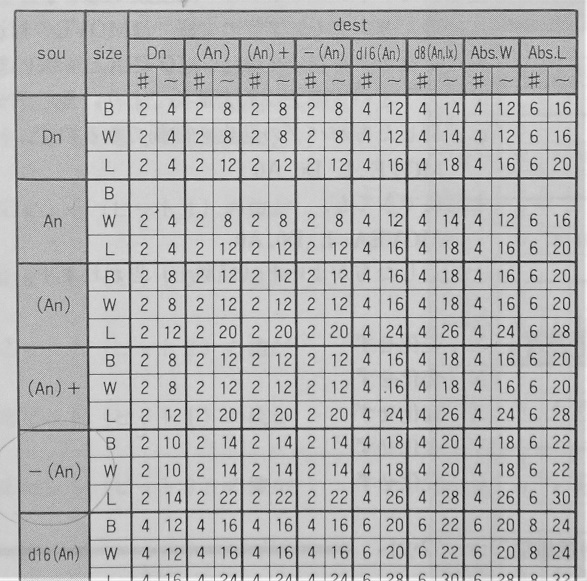

メガデモ・デモシーンについて
デモシーンは、コンピュータ・アート・アンダーグラウンドが融合した欧州発祥の文化です。 ここでは、デモシーンの概要についてまとめます。注）2021/02/03 時点の記事をもとに加筆修正した内容となっています。 デモシーンをめぐる状況は流動的です。現状と合致しない可能性があります。
目次
デモ、デモパーティ、デモシーンについて
デモ・デモパーティ・デモシーンについて解説します。 これらは密接に関わっており、一つ一つを単体で説明することは困難です。- デモ（メガデモ、イントロ）
-
デモ
は、
映像と音をリアルタイムに生成するコンピュータ・プログラムであり、デジタル・アートのカテゴリです。
アートというと高尚なものを想起させてしまうかもしれませんが、
そのような難しいモノではありません。
デモの多くは、
ホビープログラミングで短時間・短期間で作れるような、簡単なプログラムです。
デモは、作成者の技術力を誇示し、競うことを目的に作成されます。
単に技術を正確に実装することの競争ではなく、どう見せるかという所に重点がおかれています。
作成者の個性や、影響を受けてきたもの、創意工夫、手癖などが色濃く反映された作品が沢山集まる傾向があります。
デモには、64 キロバイトや 4 キロバイトなどの小さな実行ファイルのみで構成されるカテゴリもあり、 これらは区別して イントロ と呼ぶ場合があります。 デモは メガデモ と呼ばれることもあります。 メガデモと呼ぶ場合、1 メガバイトのフロッピー 1 枚という容量制限を指すという説明がされる場合もありますが、 実際にはそれに限らず、「見た目以上に沢山の要素が詰め込まれている」といったニュアンスで使われることが多いです。
- デモパーティとコンポ
-
デモは、
デモパーティ
と呼ばれるイベントで開催されるコンテストのエントリ作品として発表されます。
このコンテストは
コンポ
と呼ばれています。コンポは「コンペティション」の略語です。
コンポでは、大勢の観客が見守るなか、エントリ作品が巨大スクリーン上で大音量で披露されます。
そして、その場の投票により評価が行われます。
フィンランドのデモパーティ Assembly の様子（2009 年の映像）
- デモシーン
-
デモシーン
とは、このようなデモやデモパーティおよびその周辺の歴史的背景も含めた文化の総称です。
デモシーンに関わる人たちのことは
デモシーナ
と呼ばれています。
デモシーンの歴史
デモシーンの起源が正確にいつ頃までさかのぼるのかは、解釈のわかれるところです。 ここでは直接的な起源になる 1980 年代あたりからの歴史をまとめます。- デモパーティ発生の経緯
-
デモシーンは、
インターネットが出現する以前の 1980 年代、
欧州の若者たちの間で流行ったゲームソフトのクラッキング
（コピープロテクトを解除し、違法にコピーできる状態にすること）
が起源です。
彼らは、
クラッキングしたソフトにクレジットとして
クラックトロ
と呼ばれる独自の起動デモを挿入して配布していました。
クラックトロは作成者の技術力を誇示する、音を伴った映像作品になっていました。 グラフィティ・アートが描きにくいところに高度な絵を描くほど評価が高くなるのと同様、 クラックトロは高度なプロテクトが掛けられたソフトをクラッキングし、 そのディスクの狭い空き領域に高度なデモを挿入することが高い評価につながります。 クラック一番乗りを競うスピード勝負といった側面もありました。 やがてこれが独立して、デモに発展していきます。
そしてヨーロッパの各地でコンピュータ愛好家が集まるパーティが開催されました。 パーティではデモコンポが行われた他、 各自が持ち寄った PC を LAN 接続し、ファイル交換パーティやゲーム大会が開催されました。 1990 年代初頭には、当時流行ったレイヴ・カルチャーも取り込まれました。 次第にファイル交換やゲームだけが目的の人達とは住み分けが進み、 デモに特化した「デモパーティ」に変化していきました。
- コンピュータ・アート・アンダーグラウンドが融合した独特な文化
-
現在のデモシーンでは、クラッキングや違法コピーのような行為は行われておらず、
純粋にデモとそれに関連するコミュニティとして機能しています。
しかしそのルーツとして存在したアンダーグラウンド感は残り、
コンピュータ・アート・アンダーグラウンドが融合した独特な文化が成立しました。
「デモシーンとは何か？」について説明される際、必ずと言ってよいほどクラッキング・クラックトロの歴史についても言及されます。 それらの歴史は「デモシーンが何をもってアンダーグラウンドなのか？」の根拠になっています。 アンダーグラウンド要素はデモシーンにとって重要なものであり、切り離して考えることは難しいです。
- 欧州デモシーンのドキュメンタリー Moleman 2
-
デモシーンの歴史については、こちらの動画が詳しいです。
デモシーンに深くかかわる著名な方々への直接インタビューから構成されたドキュメンタリーで、
憶測・推測を含まない貴重な一次資料になっています。
精度の高い日本語字幕もついています。
Moleman 2 - Demoscene - The Art of the Algorithms (2012 年)
字幕を作成された翻訳者様のサイト 6octaves では、さらに詳しい独自の デモシーナ インタビュー 記事が読めます。
- 欧州ではデモシーンが文化遺産として認識されるようになった
-
2020 年、フィンランドの文化遺産庁は、
フィンランド国内の「生きている遺産目録」
（National Inventory of Living Heritage）に、
デモシーン文化を登録したと発表しました。
この目録に含まれる項目から、
毎年一つがユネスコの無形文化遺産にノミネートできるとのことです。
ドイツでも同様に、
デモシーン文化を文化遺産として登録する動き
があります。
デモシーンのようなデジタル文化が遺産目録に登録されることは前例がなく、素晴らしいことです。 しかし同時に、新たな段階に踏み込むことで、別の課題も出てくると考えられます。 例えばコミュニティ内で、歴史に関する情報が保守されているか？ 倫理的な問題はクリアになっているか？ などです。 近年（2021 年現在）、大規模なデモパーティではこれらの問題を啓蒙するセミナーも積極的に開催されるようになりました。 デモシーン文化は、アンダーグラウンドかつ文化遺産でもあるという、 バランス取りの難しいところを慎重に進んでいる状況です。
日本のデモシーン
日本にも、デモシーンが存在します。 ここでは 1990 年代後半あたりからの日本のデモシーンの状況をまとめます。 それより以前の日本の状況については別の記事でまとめます。- 1990 年代後半、日本国内でもデモシーンの存在が広く知られるようになる
-
1990 年代後半、日本国内の雑誌にメガデモ紹介記事が盛んに掲載され、
デモシーンの存在が広く知られるようになりました。
当時の雑誌は、デモのことを「メガデモ」と称して紹介した経緯があり、
日本ではデモの総称としてメガデモという呼称が浸透することになりました。
日本では「デモ」という言葉は他の意味（ゲーム内のカットシーン、販促 PR 用、プラカードを掲げて街を練り歩く等々）で使われることが多く、
混同を避ける理由や検索性を高める目的から便宜上「メガデモ」と呼ばれることが多いです。
- 日本初のデモコンテスト HOLICS'96
-
1996 年に日本国内で HOLICS'96 というデモコンポが開催されました。
web archive 上でその痕跡が確認できます。
web archive : DemoholicML 主催 HOLICS'96
HOLICS'96 ではエントリ作品の募集・投票はオンラインで行われました。
- ２ちゃんねる発祥のデモパーティ 2chparty（2001 年～ 2009 年）
-
2001 年から、２ちゃんねる発祥のデモパーティである 2chparty が、不定期で開催されています。
これまでに、2001 年、2005 年、2006 年、2009 年の計 4 回が開催されました。
2001 年を除いて、いずれもオンラインのパーティでした。
- 日本初の本格的なデモパーティ Tokyo Demo Fest（2011 年～）
-
Tokyo Demo Fest
は、日本初の本格的なデモパーティです。
このパーティは海外とほぼ同じ形式で定期開催されています。
海外デモシーンからも主要なデモパーティの一つとして認知されていて、
国内外から多くの参加者が訪れます。
Function 2012(PC-64k intro) - Candy "TokyoDemoFest2013 Invitation" by nonoil & gorakubu
デモパーティ開催告知もデモ作品で行われる。
ファイルサイズ 64 KB！
デモパーティで開催される様々なイベント
-
デモパーティでは、様々なイベントが開催されます。
ここではその例をいくつか紹介します。
- デモコンポ
-
デモパーティにおける主要なイベントは、
デモ作品を扱うデモコンポです。
デモコンポは、さらに以下のようなサブカテゴリに分類されます。
- PC デモコンポ
-
PC 上で実行可能な、ファイルサイズ無制限のデモコンポです。
コンポで利用される実行環境は一般的なハイエンド PC で、
Windows、Linux、Mac など、主要な OS が利用可能です。
WebGL などを利用した、ブラウザ上で動作するデモも許容されています。
既存のゲームエンジンを利用したものでも構いません。
動画ファイルを埋め込んでも構いません
（ただし、巨大な動画ファイルをただ単に再生するだけの作品が評価されるかは別問題です）。
ネットワーク上のファイルを参照することは許可されていません。
Monolith (2015年 Andromeda Software Development)
PC デモの作品例。
このデモは既存エンジンを利用していない。
- PC イントロコンポ
-
先のデモコンポと同じですが、
ファイルサイズに制限が課される部門です。
65536 バイト以下を対象とする 64K イントロ、
4096 バイト以下を対象とする 4K イントロ、
256 バイト以下を対象とする 256 bytes イントロ等、
ファイルサイズによりさらに細かい部門に分けられます。
外部ファイルを参照することは許されていません。
ゲームエンジンの利用や動画ファイルの埋め込みは禁止されていませんが、 厳しいファイルサイズ制限下では事実上不可能です。 高いコーディングスキルが要求される過酷なカテゴリです。
Fermi Paradox (2017年 Mercury)
64K イントロの作品例。
ファイルサイズ削減のため、惑星表面の模様などはすべてアルゴリズムで生成されている。
- Old Skool デモコンポ
-
デモシーン界隈で使われる「Old Skool」は、
old school の事で、古い（けれど魅力的な）ものを意味します。
ここでは具体的には、レトロ PC やレトロゲーム機を指します。
Old Skool デモは、 極端に低いスペックのハードウェア上で動く必要があります。 PC デモ/イントロのように、 ハードウェアのスペック向上による恩恵に頼ることはできないため、 先人たちの残した作品と同条件で比較されることになります。 正攻法が全く通用しない、実力勝負の超過酷なカテゴリです。
Overdrive 2 (2017 年 TiTAN)
Old Skool デモの作品例。
メガドライブ実機でリアルタイム動作する（特殊カートリッジ非使用）。
攻めた処理を行っているためか、発表当時このデモを正常動作させられるエミュレータは存在しなかった。
- グラフィクスコンポ
-
グラフィクスコンポは、
写真や自作絵などを対象にしたカテゴリです。
プログラミングスキルを持たないアーティストでも参加可能です。
一方、プログラマ向けのグラフィクスコンポもあります。 こちらは、プロシージャルグラフィクスコンポと呼ばれ、 4096 バイト以下等の制約が課された実行ファイルで生成した静止画で競います。

Hoody (2020 年 Rgba)
プロシージャルグラフィクスコンポの作品例。
テクスチャなどの外部データを一切利用せず、
4096 バイト以下の実行ファイルに含まれるプログラムコードのみで、
背景、人物（髪、服の質感、眼球の虹彩に至るまで）、
すべてを数式とアルゴリズムで生成している。
- ミュージックコンポ
-
ミュージックコンポは、自作曲によるコンポです。
使用機材に制限のないストリーミングミュージックコンポ、
MOD フォーマット
を対象としたトラッカーミュージックコンポ、
実行ファイルによるミュージックコンポ等があります。
Wrecklamation (2018 年 Logicoma)
トラッカーミュージックコンポの作品例。
楽曲を再生しつつ、Jump コマンド等を駆使することで、
パターン表示画面でアニメーション再生も行っている。
- ワイルドコンポ
-
ワイルドコンポは、
任意の動作環境が選択できる、
ファイル容量の制限もないデモコンポです。
この説明だけでは、PC デモコンポと同じ制約に思えますが、全く異なっています。
ワイルドコンポでは、コンピュータを使わないアナログな手法による作品でもエントリ可能です。
動画ファイルでのエントリが可能なので、ショートフィルムのような作品に対する受け皿ともなっています。
OHP Mega Demo 9000 - TRSI & DES!RE - @Party 2012
ワイルドコンポの作品例。
OHP とモアレ現象を駆使して、メガデモっぽいエフェクトを生成する。
- ライブコーディングコンポ
-
デモシーンの世界では、
ライブコーディングというカテゴリが存在します。
会場で観客が見守るなか、
即興でコードを書き、
その内容で競います。
コンポ開始時にお題が提示されることもあります。
Revision 2019 - Event - Shader Showdown 2019 - Final
30 分以内で作成したフルスクラッチコードでグラフィクスを生成する。
優劣は観客の拍手の大きさで決定される。
トーナメント方式で、数日に渡って開催される。
- セミナー
-
コンポの合間などの時間帯には、
様々なカテゴリのセミナーが開催されます。
セミナーでは、
グラフィクスやサウンド等に関する技術的詳細や、
デモシーン界隈の文化など、
様々な内容が扱われます。
Japanese Home Computers (2020 年 Mikko Heinonen)
日本のパソコンとその背景を紹介するセミナー。
- その他のイベント
-
デモパーティ会場内ではこの他にも、
ライブイベント、
アワード（後述）、
ビールの試飲会など、
様々なイベントが開催されます。
パーティ会場の外でも、 現地の観光スポット巡り、 バーベキュー、 運動会など、 様々なイベントが開催されます。 そして、 パーティ訪問者の多くは、 会場外でビールを飲んだり話したりする事に多くの時間を費やしています。 デモパーティには、 各方面の伝説的な人々が集まるので、 そのような人達と交流することも主要なイベントの一つとなっています。
フィンランドのデモパーティ Assembly では、
Boozembly と呼ばれる屋外パーティが有志により開催される。
Assembly は飲酒が禁止されているが、Boozembly では大丈夫。
（ちなみに動画はフィンランド語のため何言ってるかさっぱりわからない）
デモ作品の評価体制
続いて、 デモパーティでリリースされたデモ作品に対する評価体制について説明します。- パーティ会場での投票
-
デモ作品に対する最初の評価は、パーティ会場での投票にて行われます。
投票結果には、
会場のお祭り感や、
大音量・大スクリーンでの視聴体験が強く影響する傾向があります。
- アーカイブサイト上での再評価
-
デモパーティでリリースされた作品は、アーカイブサイトに掲載・保管されます。
アーカイブサイトには以下のようなものがあります。
- Pouet : https://www.pouet.net/
-
2020 年現在、最も活発なサイト。
どう発音するのかが謎ですが、youtube のセミナー動画で「プエット」と発音されている様子が確認されています。
- Demozoo : https://demozoo.org/
-
こちらも 2020 年現在最も活発なサイトの一つです。
- Scene org : https://scene.org/
-
デモパーティでリリースされたファイルが保管されています。
- アワードでの再評価
-
デモシーンの世界にも、アワードと呼ばれるイベントが存在します。
アワードでは、
各年にリリースされたデモ作品に対して、改めて審査を行った上で、賞が与えられます。
デモシーンの世界のアワードには、以下のようなものが存在します。
- THE METEORIKS : https://2021.meteoriks.org
-
(2021 年現在) 世界最大のデモパーティである Revision Party で開催されるアワードです。
- SCENE.ORG AWARDS : http://awards.scene.org/archive.php
-
かつてのデモ総合サイトである
scene.org
上で、
2011 年まで行われていたアワードです。
デモパーティ会場での投票結果は、 会場の雰囲気や作品が披露される順序などの影響を受けやすく、 作品に対する過小評価が発生することがあります。 作品がリリースされたデモパーティの知名度が、その作品の評価を左右してしまうケースも考えられます。 一方アワードでは、このような問題が起こらないよう、厳正かつ公平に審査が行われます。 アワードで高く評価されるデモは、必ずしもデモパーティでの上位作品とは限りません。
- 過去作に対する正当な評価
-
デモの内容は、そのリリース時点でのハードウェアスペックに強く依存します。
ハードウェアのスペックは年々向上しているため、
かつては凄いとされたことが、数年もすると簡単な平凡なプログラムで達成できるようになってしまうことがあります。
デモのデザイン面においても、同様の問題があります。 ある優れたデザインを持ち込んだ作品は、多くの模倣作を発生させる傾向があります。 その結果、かつて優れたデザインとされたものが、数年もするとありふれたデザインになってしまうことがあります。
デモシーンの世界は、 このような作品の「陳腐化」の問題にずっと向き合ってきました。 そしてこの問題に対処するための慣習・体制が確立されていきました。 デモシーンの世界では、「一番乗り」「元祖」の作品に対しては、それに相応しい評価が与えられます。 作品の評価を行う際は、 その作品が発表された当時のハードウェアスペック、 技術背景、 時系列などが考慮されます。
このように過去作に対して正当な評価を与えるためには、 それ以前の過去作のアーカイブが必要です。 デモシーンが過去作をアーカイブすることには、 単に歴史を記録して懐かしむことだけではなく、 新しいデモの評価体制を万全の状態に保つという目的・機能があります。
デモに課される制約とその意義
デモコンポのカテゴリには、 制約条件下でデモを作成する部門が多く存在します。 ここでは、デモコンポがデモに課す制約と、 その意義について触れます。- デモコンポがデモに制約を課す目的
-
凄いものを作ることが目的のデモコンポで、
デモにわざわざ制約を課すことは、
一見すると本末転倒な行為に思えます。
なぜこのような制約を課すのでしょうか？
それには明確な理由があります。
デモシーン発祥当時のコンピュータはとてもスペックが低く、 制約の中で創意工夫することが当たり前でした。 一方現在では、 コンピュータの性能は著しく向上し、 従来の制約はほとんど解消されました。 これは歓迎されることですが、 苦労せずとも様々なことが可能になることは、 デモ作成の観点では創意工夫の余地を奪うことにもなりました。
デモコンポがデモに制約を課す主な目的は、 コンピュータの性能向上により奪われた創意工夫の余地を取り戻し、 純粋にデモ作成者の技量が反映される環境を作り出すことです。
- 一切の制約がないとコンポは成り立たない
-
もし、デモコンポに制約が一切無かったら、
プログラミング技術で競う意味が無くなってしまいます。
例えば、デモがネットワークに接続することを許可したらどうなるでしょうか？ 単に youtube にアップロード済みの動画を再生するだけのデモがエントリ可能になってしまいます。 同様に、ファイルサイズを無制限にしてしまうと、 巨大な動画ファイルを埋め込んだだけのデモがエントリ可能になってしまいます。 そうなってしまうと、デモコンポはショートフィルムコンポになってしまい、 もはやプログラミング技術は不要になってしまいます。
ゲームエンジンを利用したデモも同様の問題を抱えています。 ストアで購入した豪華アセットを利用したカットシーンを ゲームエンジン上で再生するだけのデモで競う状況が発生してしまうと、 デモコンポはアセットにどれだけお金を掛けられるか？という資金力競争になってしまいます。
- ただし制約を課しすぎるのも問題
-
デモ作成者の純粋な技量による競争を成立させるため、
デモコンポには制約が必要です。
ただし、制約事項を増やしすぎるのは良い選択ではありません。
実際のところ、個々の技術要素を制限することは妥当ではありません。 最も影響が大きそうに思える動画ストリーミング再生を例に挙げても、 制限することは妥当ではありません。 歴史上、マスターピースとされるデモの多くが、 動画のストリーミング再生技術を利用しています。 それらの作品の手法や成果を否定することはできません。 また、動画ストリーミング再生を使った新たな表現手法が今後出てくる可能性を潰すこともできません。
ゲームエンジンの利用も、制限することは妥当ではありません。 ゲームエンジンを利用した優れたデモ作品はすでに多く発表されており、受け入れられています。 ゲームエンジンの利用を許容することは、デモシーンの間口を広げることにもなります。
- デモコンポが採用している制約の種類とその効果
-
デモの世界で求められる制約は様々です。
そのため制約は一意に決めることはできず、
制約レベルに応じてコンポのカテゴリを細分化することで対応しているのが現状です。
コンポで適用される制約の種類と、
それによりもたらされる効果は以下のようなものです。
- ネットワーク利用の制限
-
デモコンポ時に利用される実行環境は、
ネットワークから遮断されています。
これにより、
巨大な動画のストリーミング再生や、
任意の外部ソフトウェアのインストール等は不可能となっています。
- 外部ソフトウェアや dll の利用制限
-
デモコンポ時に利用される実行環境は、
OS がクリーンインストールされた状態の PC です。
従って、別途インストールされた外部のソフトウェアを利用するようなデモは動作不可能です。
また結果的に、デモが利用可能な dll は、
OS が標準的に搭載しているもの（user32.dll や opengl32.dll 等々）のみとなります。
- 動画ストリーミング再生の制限
-
いかなるデモコンポの部門も、
動画ストリーミング再生を明示的には制限していません。
ただし、汎用動画フォーマットの巨大なファイルをパックしただけのデモは、
ファイルサイズなどから容易に判別可能であり、
仮にそのような作品をエントリしたとしても、
評価されることはありません。
さらに、サイズ制限されたイントロ部門では、
動画ストリーミング再生に頼ることは容量の都合から事実上不可能です。
- ゲームエンジン等の利用制限
-
いかなるデモコンポの部門も、
ゲームエンジンの利用を明示的には制限していません。
ただし、一般にゲームエンジンを利用したデモは、
ファイルサイズが肥大する傾向があり（エンジンのランタイム環境を含む必要があり、最低でも数十メガバイトに達する）、
サイズ制限されたイントロ部門には、
事実上エントリ不可能となっています。
- 豪華なアートアセットの利用制限
-
いかなるデモコンポの部門も、
豪華なアートアセットに頼ることは制限していません。
ただし、サイズ制限されたイントロ部門では、
容量の都合からアートアセットに頼ること自体がほとんど不可能です。
- 最新ハードウェアの利用制限
-
Old Skool コンポでは、レトロ PC やレトロゲーム機を利用することになるので、
最新ハードウェアの処理能力に頼ったようなデモを作成することはできません。
- 事前計算時間の制限
-
デモを起動してからデモが開始するまでの時間の長さには制限があります（最長 1 分程度が目安）。
これにより、最適化を怠ったコードによるデモが、
プリレンダリング結果をストリーミング再生して、
リアルタイム動作しているかのようにアピールすることは不可能です。
- ライブコーディング
-
ライブコーディングコンポでは、
観客が見守る中でコードを書く必要があります。
いかなるチート行為も不可能です。
しかもお題がコンポ開始時まで非公開にされていることもあり、
コード丸暗記が通用するとも限りません。
完全に生身の一人の人間としてのスペックで競うことになります。
新たなデモ作成プラットフォーム
最後に、 かつてのデモコンポで盛んに行われ、 現在では衰退してしまったソフトウェアレンダラ最適化競争についてと、 Fantasy Console と呼ばれる新たな仮想プラットフォーム群が そのような最適化競争の受け皿になっている状況について触れます。- かつてのソフトウェアレンダラ最適化競争
-
GPU が普及する以前の 1990 年代前半、
リアルタイム 3D グラフィクスは CPU によるソフトウェアレンダリングで行われ、
激しい競争が展開されました。
Second Reality（1993年 Future Crew）
ソフトウェアレンダリングによるデモ。
66Mhz 程度の 486 CPU でリアルタイム動作した。
リアルタイムでグーロシェーディングが動作しているのは驚異的だった。
このデモを作成した Future Crew は、
後に PC 用のベンチマークソフトで有名な 3DMark を作成する。
ソフトウェアレンダラ開発で重要なのが、 アセンブリ言語で直接ネイティブコードを記述することによる最適化です。 かつてのデモシーンの世界にはアセンブラ至上主義がありました。 そしてこの当時のデモは、 プログラマの最適化の技量を示すベンチマークになっていました。 アセンブラ至上主義の名残は、 フィンランドの最大規模のデモパーティ Assembly の名称にも残されています。

かつての最適化で重要だったのがクロックサイクル表（画像は MC68000 の例）。
各命令の実行コストを確認しながら地道に最適化していく。
苦行のようだがその効果は絶大だった。
そして、このようなソフトウェアレンダリングは GPU の普及に伴い衰退して行き、 2000 年代に入るとほとんど見られなくなりました。
- ソフトウェアレンダラ最適化競争に適したコンポ環境が今求められている
-
かつてソフトウェアレンダラ最適化競争が展開されたような、
GPU などの使用機材のスペックに左右されない、
プログラマの技量がダイレクトに反映される環境は、
競争のためのプラットフォームとして適しています。
そのような競争が可能なカテゴリとしては、Old Skool コンポがあります。 ただし、Old Skool コンポの動作環境は何十年も前のハードウェアであり、 耐用年数や希少性の問題から年々入手が困難になっていて、 敷居がとても高いです。
ソフトウェアレンダラ最適化競争をデモコンポの世界に復活させるには、 現在の技術動向に合致し、 入手しやすく、 敷居が低く、 かつソフトウェアレンダラの実装が求められる環境が必要です。
- 新たなデモ作成環境としての Fantasy Console
-
ソフトウェアレンダラ最適化競争に適した環境かつ Old Skool コンポの代替環境として、
Fantasy Console と総称される仮想のゲーム開発環境群が候補として上がってきています。
- PICO-8
-
PICO-8
は、
Lexaloffle Games
によって開発されている、ゲーム作成のための仮想環境です。
PICO-8 には 1980 年頃のゲーム機に似せた仮想的なハードウェア制約が定義されており、
どのようなゲームを作っても 8 bit 風にしかなり得ないという特徴があります。
PICO-8 は Fantasy Console の先駆的存在です。
PICO-8 上でのゲーム制作は、Lua 言語で行われます。 ピクセル単位で描画を行うことで、 ソフトウェアレンダリングも可能です。 デモも多く作成されています。
puroresu no seishin（2020 年 Jumalauta）
PICO-8 上でソフトウェアレンダリングを行っているデモの例。
CPU パワーは無尽蔵に使えるため、
8 bit 風だけれどポリゴンもグリグリ動く独特な絵になっている。
- TIC-80
- TIC-80 は、PICO-8 と同様のオープンソースなゲーム作成のための仮想環境です。 プログラミング言語は、Lua、Moonscript、JavaScript が利用可能です。 TIC-80 上でも、 ピクセル単位で描画を行うことでソフトウェアレンダリングが可能で、 PICO-8 と同様にデモが多く作成されています。
2021/02/03 初出
2021/04/13 加筆修正
文責： よっしん
[戻る]